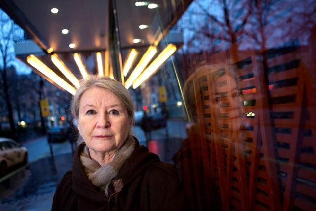

Insikt först när den grandiosa självbilden spricker
Hur ska man veta vad som är sjukt och friskt i en kultur där egot hyllas allt mer? Och vad finns det för hjälp att få, för narcissisten och för de anhöriga? Två experter på sjuklig självupptagenhet ger svar.
Vi har alla mött dem. Personer med extrema behov av att bli sedda och bekräftade, som utnyttjar sin omgivning och som blir djupt kränkta när de kritiseras.
Lena Teurnell,psykolog och psykoanalytiker, säger att en partner eller anhörig som växer upp eller lever med en narcissistiskt störd person riskerar att utplåna sitt eget jag.

Långt ifrån alla är sjukliga narcissister. Men en del är det, även om diagnosen är på fallrepet.
Hur ska man veta vad som är sjukt och friskt i en kultur där egot hyllas allt mer? Och vad finns det för hjälp att få, för narcissisten och för de anhöriga? Två experter på sjuklig självupptagenhet ger svar.
Vi har alla mött dem. Personer med extrema behov av att bli sedda och bekräftade, som utnyttjar sin omgivning och som blir djupt kränkta när de kritiseras.
Lena Teurnell,psykolog och psykoanalytiker, säger att en partner eller anhörig som växer upp eller lever med en narcissistiskt störd person riskerar att utplåna sitt eget jag.
Långt ifrån alla är sjukliga narcissister. Men en del är det, även om diagnosen är på fallrepet.
När den femte upplagan av den amerikanska diagnosmanualen DSM, som beskriver olika psykiska sjukdomstillstånd, skulle ges ut diskuterades om inte narcissistisk personlighetsstörning som diagnos har spelat ut sin roll.
Inte för att det finns färre narcissister, utan för att de är mindre synliga i ett samhälle som lovsjunger egot. Kritikerna ansåg att det finns för lite att gå på för att patologiskt narcissistiska drag ska vara mätbara.
Läs också: Mamman visade upp sina barn som märkesväskor.
Att ha självupptagna drag är inte sjukligt, tvärt om – om man inte älskar sig själv känner man inget egenvärde, säger Lena Teurnell, psykolog och psykoanalytiker.
Sjukligt blir det när personen närmast lever i en dröm och inte ser vad som är på riktigt. Att man bygger sitt liv på verklighetsförfalskning.
– Då är det inte längre tal om narcissistiskt försvar i vissa situationer utan genomsyrar det mesta den personen gör, säger Lena Teurnell och nämner artisten Michael Jackson som ett exempel.
– Han förnekade allt han i grunden var. Han nästan dödade sig själv som svart och skapade ett eget kungarike, Neverland, och opererade sig till evig ungdom.
Partnern riskerar att utveckla ett medberoende och till slut leva den andres liv och dröm. Det egna jaget utplånas.
Patologisk, det vill säga sjuklig narcissism är ett skydd, ett falskt själv som har utvecklats av det lilla barnet som inte har fått sina inre eller yttre trygghetsbehov tillgodosedda, säger Lena Teurnell.
– Framför allt har man inte blivit sedd för den man är, inte fått bara vara människa, utan existerar bara för sina egenskapers skull. Lever en sådan person inte upp till sin idealbild känner den djup skam.
Tillsammans med Bo Sigrell, som också är psykoanalytiker och professor i psykologi, har Lena Teurnell skrivit boken ”Narcissism – jag, mig och mitt” som handlar om hur man ska bemöta narcissister.
Läs också: Narcissistiska hustrun kunde inte visa verklig kärlek.
Hon får ofta frågan: ”Går det att leva med en narcissist?”
– Det är svårt att få en ömsesidig och levande relation med en sådan person. Partnern riskerar att utveckla ett medberoende och till slut leva den andres liv och dröm. Det egna jaget utplånas, säger hon.
Professor Bo Sigrell är ännu mer drastisk:
– Det är ofta ingen idé att försöka. Att bryta upp är det man brukar rekommendera. Annars är risken att man bara förlåter och står ut. Det går till slut på den egna självkänslan, säger han och beskriver hur barnen är särskilt utsatta:
– Barnen till narcissistiska föräldrar lär sig att antingen bara ta hand om andra eller så blir man likadan själv och bryr sig inte om någon annan.
Barn som inte blir sedda som de människor de verkligen är kan utveckla sjuklig narcissism, förklarar Lena Teurnell, psykolog och psykoanalytiker.
De anhöriga tassar ofta omkring personen och lever i ständig oro, säger Lena Teurnell.
– Inte bara av rädsla för att föräldern ska bli arg utan ofta för att barn känner att de inte har fullt existensberättigande. De känner att mamma eller pappa är ömtålig och skyddar personen. De lär sig uppträda på sätt så att föräldern ska hållas glad och nöjd.
Läs också: Chatta om narcissism – ställ din fråga redan nu.
– Som partner vågar man inte komma med kritik för man vet att den andre då blir så alldeles utom sig.
Att bryta upp ur en sådan relation är inte enkelt. I en parrelation med barn är många rädda att partnern inte ska klara av att ge barnen trygghet, berättar Lena Teurnell.
Om man inte vill säga upp kontakten helt är det ofta bäst att reglera den, att ses och höras vid begränsade tillfällen och ha en i förväg uppgjord tidsram.
Finns det då ingen chans att få bukt med en narcissistisk personlighetsstörning?
En svårighet är att den som är sjuk saknar sjukdomsinsikt och därför inte söker hjälp. Om det sker är det ofta sent i livet, säger Bo Sigrell.
– Det kan ske när de förlorar en relation eller ett jobb. När den grandiosa självbilden inte stämmer längre. Läs också: Bristande ödmjukhet en varningssignal.
Om en sjukligt narcissistisk person ska kunna bli hjälpt krävs att den personens narcissistiska försvar bryts ner, menar Lena Teurnell.
– Om personen har kvar förmågan till självreflektion och verklighetsförankring, då finns det möjligheter, säger hon och fortsätter:
– Även de här personerna behöver kärlek, men det är inte lätt att älska en människa utan sprickor. Om man inte vill säga upp kontakten helt är det ofta bäst att reglera den, att ses och höras vid begränsade tillfällen och ha en i förväg uppgjord tidsram. Hjälp för anhöriga
Hjälp går att få hos familjerådgivare, parterapeuter eller individualterapeuter. På nätet finns olika forum som diskuterar narcissism, till exempel:
Vuxnabarn.nu – för vuxna barn till narcissistiska föräldrar (stängdes i augusti 2015 men artiklarna ligger kvar).
Outofthefog.website – forum skapat för anhöriga till personer med psykiska störningar, på engelska.
Webofnarcissism.com – självhjälpsgrupp, på engelska.
Wedidit.se – forum för personer eller anhöriga med olika identitets/personlighetsstörningar/posttraumatiskt stressyndrom.
Maskrosbarn.org – en anhörigorganisation för unga som växer upp med föräldrar som mår psykiskt dåligt eller har ett missbruk.
ACA – för vuxna barn till alkoholister och från andra dysfunktionella familjer, självhjälp enligt anonyma alkoholisters tolvstegsprogram.
Text: Cecilia Nebel Publicerad 27 januari 2016 04.00 · Uppdaterad 27 januari 2016 14.13
Bild: Linus Meyer